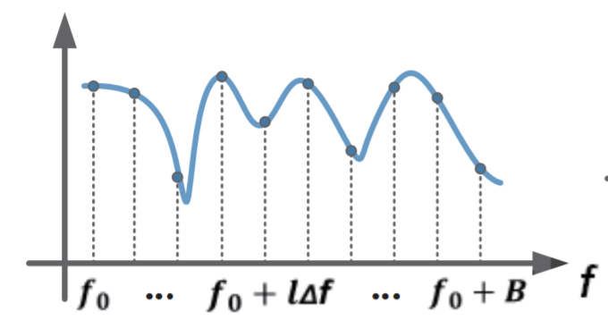

无线信道¶
1. 信道定义¶
信道又被称为通道、频道和波道，是信号在通信系统中传输的通道，由信号从发射端传输到接收端所经过的传输媒质所构成。广义的信道定义除了包括传输媒质，还包括传输信号的相关设备。 在学习这一部分的过程中，我们始终要围绕着下面的问题： 什么是信道，怎么样来表示这个信道。 信号传输里面两个重要的事情，就是如何表示信号（调制），以及如何表示信道（传输的影响）。传输最终要做的事情就是通过接收到的信号，还原出发送的信号。
狭义信道
按照传输媒质来划分，可以分为有线信道、无线信道和存储信道三类。值得注意的是，磁带、磁盘等数据存储媒质也可以被看作是一种通信信道。将数据写入存储媒质的过程即等效于发射机将信号传输到信道的过程，将数据从存储媒质读出的过程即等效于接收机从信道接收信号的过程。
广义信道
按照信道功能进行划分，可以分为调制信道和编码信道两类。
调制信道是指信号从调制器的输出端传输到解调器的输入端经过的部分。对于调制和解调的研究者来说，信号在调制信道上经过的传输媒质和变换设备都对信号做出了某种形式的变换，研究者只关心这些变换的输入和输出的关系，并不关心实现这一系列变换的具体物理过程。这一系列变换的输入与输出之间的关系，通常用多端口时变网络作为调制信道的数学模型进行描述。
编码信道是指数字信号由编码器输出端传输到译码器输入端经过的部分。对于编译码的研究者来说，编码器输出的数字序列经过编码信道上的一系列变换之后，在译码器的输入端成为另一组数字序列，研究者只关心这两组数字序列之间的变换关系，而并不关心这一系列变换发生的具体物理过程，甚至并不关心信号在调制信道上的具体变化。编码器输出的数字序列与到译码器输入的数字序列之间的关系，通常用多端口网络的转移概率作为编码信道的数学模型进行描述。

2. 信道状态信息¶
理解信道对于理解无线通信和感知非常重要。首先我们来看一下是如何描述一个信道的。假设发送者A发送数据给接受者B，给定一个发送信号例如sin(wt),接收者B接收到的信号如何来描述。 一般来说，我们可以想到信号经过信道后至少有两个方面的变化。
第一个变化就是信号会衰减，简单来看，也就是说信号会由之前的sin(wt)变为A sin(wt)，其中A为衰减系数。
另外一个变化就是由于多径的影响，收到的信号为多条不同路径信号的叠加，也就是为A_1 sin(wt + \phi_1) + A_2 sin(wt + \phi_2) + \ldots + A_n sin(wt+\phi_n)。
如果我们将sin(wt)换成了冲击信号的话，通过信道后通常会有如下的结果。

思考：如何来表示这样的影响
通常我们有很多的方法来表示这样的信号带来的影响，最简单的接收信号y可以表示为y = \sum_{i\leq n}x*A_ie^{jw_i}。 表示了不同信号延迟和衰减的叠加。 同时，我们也有另外的方法来表示。我们先引入卷积概念， 函数f 和 g为两个可积函数，f和g的卷积记做f*g，我们有 $$ f*g = $$ 记冲击函数结果中各项系数为 H = [h_1, h_2, \ldots, h_k]，那么输入信号x通过信道的输出结果就是 y = H*x在没有噪声的情况下。如果存在噪声noise，那么结果为y = H*x + noise。
思考为什么会是卷积？
信道估计¶
为了估计出H的大小，一般的做法为发送已知内容的信号，例如信号中的前导码等，通过分析接收到的信号和发送信号的变化，计算出H。
实际系统的信道状态信息¶
在无线通信中，信道状态信息通常可以通过无线网卡来获取，这是无线通信中的一个重要参数，有了这个参数后，接收节点能够还原出发送节点的信息。信道状态信息一般被称为Channel State Information（CSI）。CSI描述了一个信号如何从发送端传播到接收端以及相应影响，如散射、衰落和能量随距离的衰减，即信道估计。运用CSI可以依据当前信道状态实行自适应传输，这对多天线系统中实现高速率的可靠通信十分重要。
CSI可以分为瞬时CSI（Instantaneous CSI）和统计CSI（Statistical CSI）。瞬时CSI意味着当前信道状态已知，因此可以调整发射信号来优化接收信号以达到空间复用或减少比特错误率。统计CSI意味着信道的统计特性已知，如衰落分布的类型、平均信道增益、空间相关性等，这些信息也能用来进行传输优化。
在某些快衰落系统中，信道状态在symbol级别都会发生极速的变化，此时只用统计CSI是有意义的。另一方面，在慢衰落系统中，可以在合理精度内得到瞬时CSI估计，在该估计过时前仍可被用来进行传输适应。
3. 信道冲击响应¶

信道冲击响应（Channel Impulse Response，CIR），顾名思义，即当输入一个单位脉冲信号时，信道输出端的响应输出信号。
通信信道会对经过的信号产生作用（例如减弱，改变频率等），不同的信道作用效果不一样。因为任何输入信号都可以分解成单位脉冲信号的线性叠加，研究信道对单位脉冲信号的响应是有意义的。对于一个线性系统，输出信号可以用输出端对单位脉冲信号的响应的线性叠加表示。信道冲击响应反映了信道的基本特性。
事实上，信道我们就可以看做一个滤波器，这个滤波器的参数通常我们用h来表示，这个参数如上图所示。 如果我们知道了这个信道参数，也就是信道冲击响应的话，那么对于任意输入信号，我们也能够计算出对应的经过信道后的变化。严格的说，对于信号x,经过信道后的结果为y=x\times h1 其中\times表示卷积。在数据传输中，实际上重要的一个过程就是通过接收到的y和测量的h，计算传输的x。这其中带来了另外一个重要的问题就是如何来计算信道冲击响应。 当然理想情况下，我们可以在发送端发送一个冲击，然后在接收端测量这一冲击，通过这个方法来计算信道参数。实际上，发送一个理想的冲击信号是很困难的，因此实际上我们可以通过发送已知的其他信号来测量信道冲击相应，比如数据发送过程中的preamble，我们就可以利用来计算信道冲击相应。在实际计算中，我们还可以将时域上的信道冲击响应转化为频率，如下图所示。这样实际上我们比较输入信号和输出信号的频域特征，我们就可以计算出相应频域上的冲击响应，从而计算出相应的时域上的参数。 
4. 信噪比¶
信噪比（Signal-to-noise ratio，SNR or S/N）用于衡量信号强度与背景噪声强度的关系，定义为信号功率与噪声功率之比。
SNR常使用分贝（dB）作为单位。
其中，P_{signal}为信号功率，P_{noise}为噪声功率，A_{signal}为信号振幅，A_{noise}为噪声振幅。
MATLAB提供了awgn函数用于向目标信号按规定的信噪比加入高斯白噪声，调用示例如下：
1 2 3 4 5 6 7 8 | fs = 100; % sampling frequency t = 0:1/fs:1; x = sin(2*pi*4*t); % Add white Gaussian noise to signal % snr = 10dB y = awgn(x, 10, 'measured'); plot(t, [x, y]); legend('Original Signal', 'Signal with AWGN'); |
5. 多径效应¶
由于电磁信号所处环境的不同，传播过程中出现折射、反射、漫射、衍射等等现象，在接收端收到了来自多条路径的信号，分为视距路径（Line of Sight）和非视距路径（Not Line of Sight）。多径效应对无线系统有很大影响，常用的解决技术有时域均衡、正交频分复用（OFDM）、Rake接收机、分集接收技术等。

6. 信号衰落¶
在无线通信领域，衰落（Fading）是指由于信道的变化导致接收信号的幅度发生随机变化的现象，即信号衰落。导致信号衰落的信道被称作衰落信道。衰落可按时间、空间、频率，三个角度来分类。
时间衰落
在时间上，分为慢衰落和快衰落。慢衰落描述的是信号幅度的长期变化，是传播环境在较长时间、较大范围内发生变化的结果，因此又被称为长期衰落、大尺度衰落。快衰落则描述了信号幅度的瞬时变化，与多径传播有关，又被称为短期衰落、小尺度衰落。慢衰落是快衰落的中值。
空间衰落
在空间上，分为瑞利衰落和莱斯衰落。瑞利衰落适用于从发射机到接收机不存在直射信号的情况；相反，莱斯衰落适用于发射机到接收机存在直射路径的情况。
频率衰落
在频率上，分为平坦性衰落和选择性衰落。相干带宽是描述时延扩展的指标，是表征多径信道特性的一个重要参数。它是指某一特定的频率范围，在该频率范围内的任意两个频率分量都具有很强的幅度相关性，即在相干带宽范围内，多径信道具有恒定的增益和线性相位。通常，相干带宽近似等于最大多径时延的倒数。从频域看，如果相干带宽小于发送信道的带宽，则该信道特性会导致接收信号波形产生频率选择性衰落，即某些频率成分信号的幅值可以增强，而另外一些频率成分信号的幅值会被削弱。当信号带宽远小于相干带宽时，所有的信号频率呈现出一样的强度衰落，称之为平坦性衰落。
7. 参考文献¶
- Zheng Yang, Zimu Zhou, and Yunhao Liu. 2013. From RSSI to CSI: Indoor localization via channel response. ACM Comput. Surv. 46, 2, Article 25 (December 2013), 32 pages. DOI: https://doi.org/10.1145/2543581.2543592
- Wikipedia/Communication_channel
- Wikipedia/Multipath
- Wikipedia/Fading
- Wikipedia/Channel_state_information